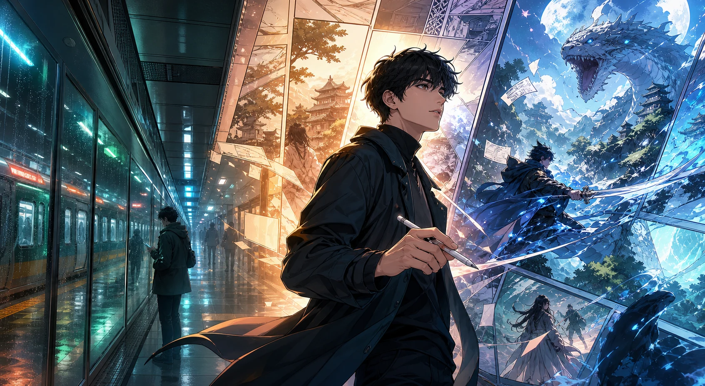

IDEA
짧게 적은 문장을
이야기로 넓힙니다.
주인공의 바람과 사건의 시작을 찾아 한 줄 아이디어에 위기와 선택, 다음 화를 기다릴 이유를 더합니다.
ONE LINE INTO YOUR WEBTOON
이야기를 한 줄로 적어보세요. AI가 서사를 확장하고 세로 웹툰에 어울리는 컷과 대사로 구성합니다. 마음에 들지 않는 부분만 고쳐 나만의 작품으로 완성하세요.

오늘도 같은 역이었다.
내가 그린 장면이... 움직여?
다음 컷은 내가 정한다.
CHAPTER 01
아이디어의 심장 찾기
IDEA
주인공의 바람과 사건의 시작을 찾아 한 줄 아이디어에 위기와 선택, 다음 화를 기다릴 이유를 더합니다.
CUT
짧은 컷, 긴 침묵, 강한 클로즈업을 배치해 독자가 다음 장면으로 자연스럽게 스크롤하도록 리듬을 만듭니다.
DIALOGUE
장면을 설명하는 문장보다 인물의 성격과 다음 행동이 드러나는 대사를 골라 다듬습니다.
HOOK
질문이나 반전을 남겨 짧은 도입부만으로도 다음 이야기를 기다리게 합니다.
CHAPTER 02
말풍선의 언어를 바꿔도 장면의 감정과 템포는 그대로 이어집니다.
오늘도 같은 역이었다.
내가 그린 장면이... 움직여?
다음 컷은 내가 정한다.
CHAPTER 03
내가 보고 싶은 이야기의 시작을 짧게 적습니다.
주인공의 목적과 사건, 다음 화의 궁금증을 보강합니다.
확장된 이야기를 세로 호흡의 장면과 대사로 나눕니다.
마음에 들지 않는 컷과 말풍선만 골라 다시 다듬습니다.
모바일 독자 화면으로 확인하고 공개할 작품을 게시합니다.
TRY THE STUDIO
준비된 각성물 시나리오를 따라 컷을 만들고, 말풍선을 고치고, 인물 위치를 옮겨보세요. 도토리 없이 반복해서 체험할 수 있습니다.
무료 가이드 시작YOUR STORY STARTS HERE